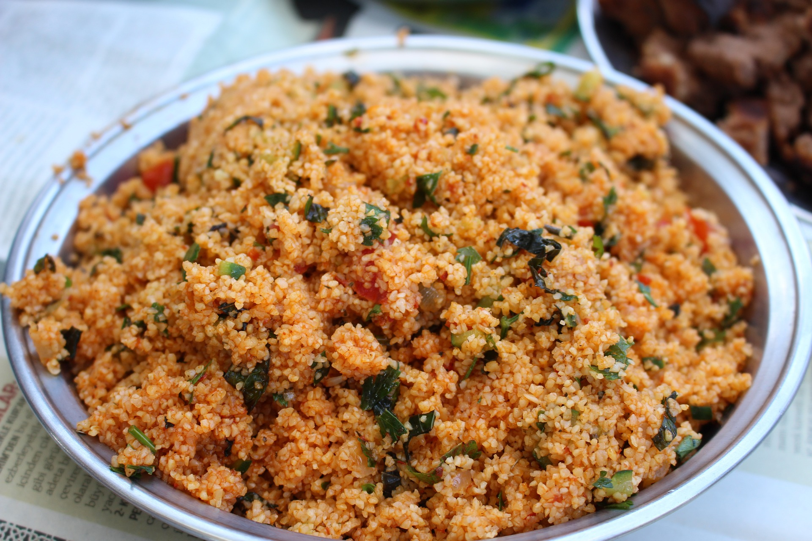

Bulgursalat

Zutaten für
| 150 | Gramm | Bulgur |
| 80 | Gramm | Kirschtomaten |
| 50 | Gramm | Frühlingszwiebeln |
| 0.5 | Bund | Minze |
| 1 | Teelöffel | Zitronensaft |
kJ (kcal)
1140 (274)
Eiweiß
7,3 g
Kohlenhydrate
53 g (4,8 g)
Fett
1,1 g
Zubereitung
Frühlingszwiebeln, Tomaten und Minze waschen. Frühlingszwiebeln in Ringe schneiden, Kirschtomaten
vierteln und Minze-Blätter in Streifen schneiden. Bulgur in einem feinen Sieb unter fließendem Wasser
waschen. Anschließend Bulgur in 450ml Wasser unter Rühren aufkochen. Topf vom Herd nehmen und
Frühlingszwiebeln, Tomaten, Minze sowie Zitronensaft dazugeben. Abschließend durchmischen und 10 Minuten
ziehen lassen.
Rezept erstellt von
 Serhat
Serhat